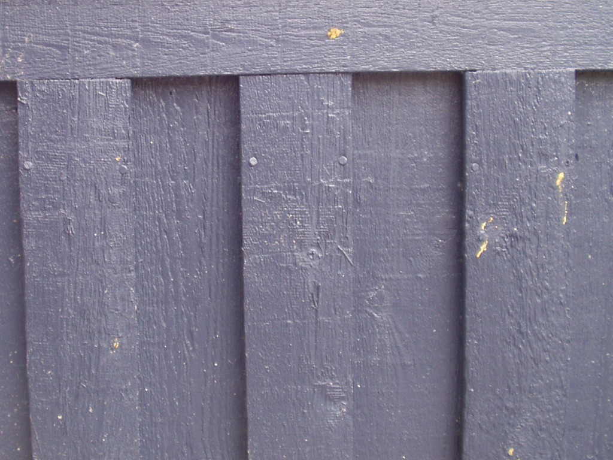
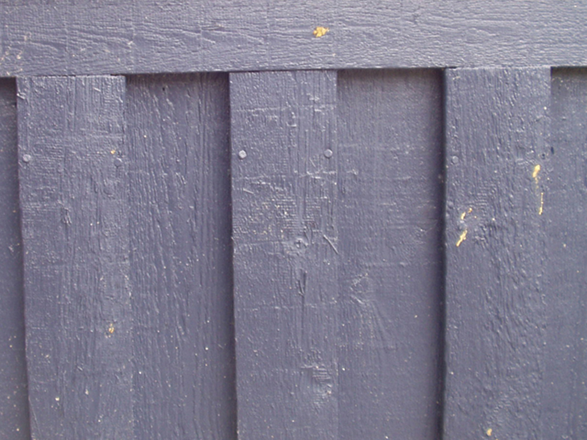
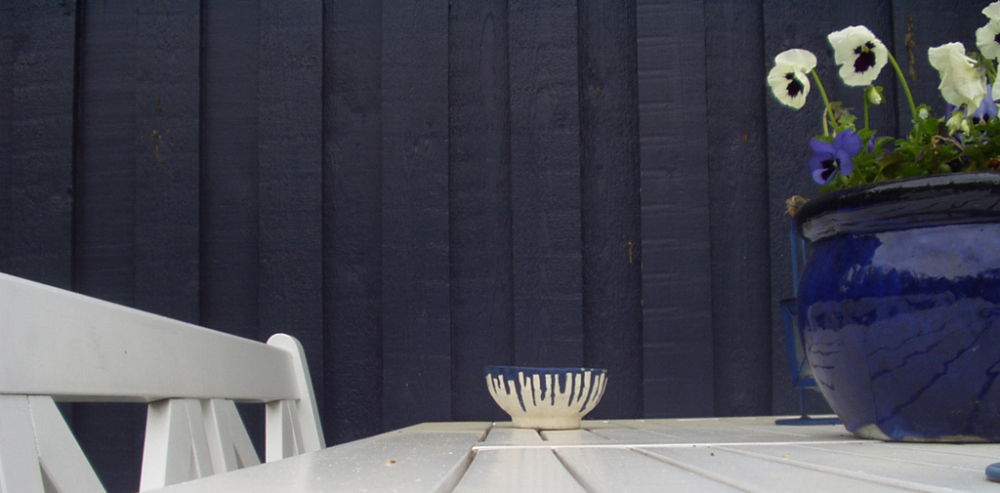
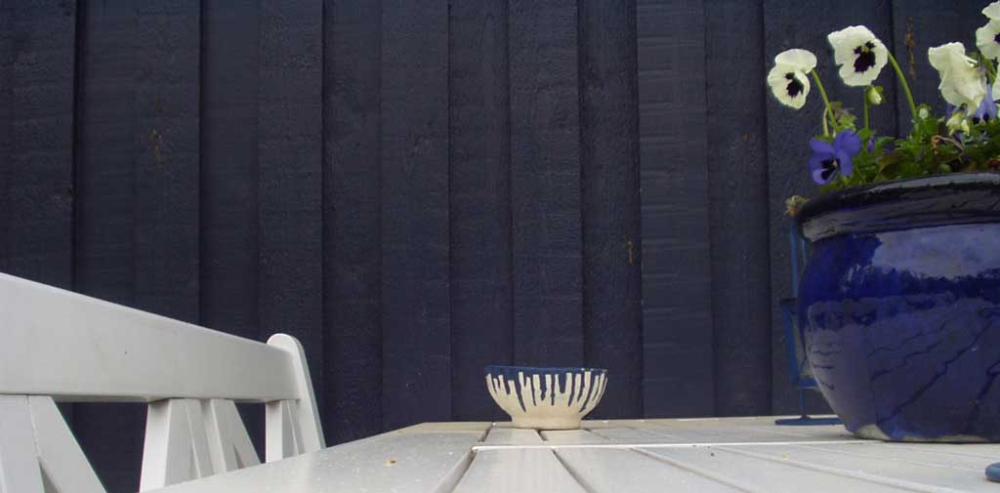

Forside
Introduktion
Valg af
Anvendelse
Motiver

Billeder med lav detaljegrad
Hvor motiverne i det foregående afsnit ikke med fordel kunne komprimeres, findes der dog også en række motiver/situationer, hvor man kan komprimere et billede ganske meget uden større synligt tab. Dette er bl.a. i motiver med få enkle detaljer, og 'store' linier i billedet.
Opløsning
|
 fig. 9, væg 1024x768 |
 fig. 10, væg 640x480 |
{kind=link}
{kind=link}
De to billeder ovenfor er et eksempel på, at det ikke altid er nødvendigt med en høj opløsning. Væggen er et meget udetaljeret motiv, som består næsten kun store skrappe linjer. Derfor har opløsningen ingen større betydning. Forskellen på fig. 9 og 10 er minimal. Den forskel der er, kan dog specielt ses på det venstre sømhoved i midten af billedet.
Sømhovedets små riller forsvinder på fig. 10. Husk på at fig. 9 fylder dobbelt så meget i hukommelsen som fig. 10, så til de fleste formål er en opløsning på 640x480 fuldtilfredsstillende, når motivet er enkelt/udetaljeret.
Komprimering
|
 fig. 11, bord v./lav kompression |
 fig. 12, bord v./høj kompression |
{kind=link}
{kind=link}
Her har vi endnu et udetaljeret motiv med store skarpe kanter og flader. Fig. 11 og 12 visser forskellen på et lavt komprimeret billede og et højt komprimeret billede. Der er ikke en særlig stor forskel, man kan se små "blokke" rundt omkring, men det er meget få steder. Man kan derfor med fordel komprimere udetaljerede billeder meget. Fig. 12 fylder en tiendel af fig. 11 i hukommelsen.
På udetaljerede billeder kan opløsningen sættes meget lavt, uden at det kan ses med det blotte øje. Det er vigtigt at gøre sig klart, at man ikke sparer noget plads i hukommelsen, hvis man tager et billede af et motiv med lav detaljegrad, med en høj opløsning. Det er lidt noget andet når vi snakker om kvalitet indstillingen; hvis motivet er udetaljeret, få man en besparelse, lige meget hvilken indstilling der vælges. Der kan dog spares endnu mere hvis kvalitetsindstillingen er lav.
Termer brugt på denne side: Detaljeskarphed Pixelblokke Detaljeskarphed Pixelblokke
|
Til top |